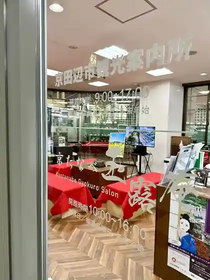
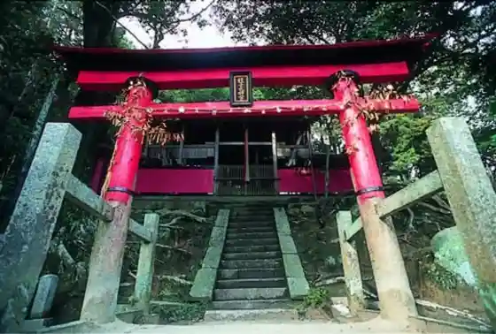
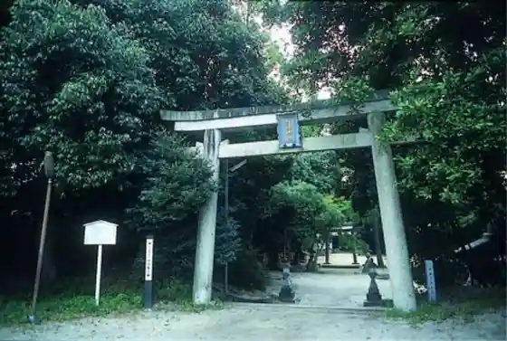

Shuon Iori Ikkyu Tera
Kyotanabe, Kyoto · 0774-62-0193 · Official / source link
Kyo Tanabe Gyokuro Iori
Kyotanabe, Kyoto · 0774-68-2801 · Official / source link
Ippan Shadanhojin Kyotanabe Tourism Association
Kyotanabe, Kyoto · 0774-68-2801 · Official / source link

Hakusan Shrine
Kyotanabe, Kyoto · Official / source link

Tsukuyomi Shrine
Kyotanabe, Kyoto · Official / source link

Kannabi Yama
Kyotanabe, Kyoto · 0774-68-2801 · Official / source link
Hisashi Takara Tera
Kyotanabe, Kyoto · 0774-65-3422 · Official / source link
Fugen Tera Fureai no Eki
Kyotanabe, Kyoto · 0774-62-4250 · Official / source link
Dai Mido Kan'onji
Kyotanabe, Kyoto · 0774-62-0668 · Official / source link
Sa Kiba Shrine
Kyotanabe, Kyoto · Official / source link
Sawai Ie House
Kyotanabe, Kyoto · 080-3810-1837 · Official / source link
Saku Oka Shrine (Iioka)
Kyotanabe, Kyoto · Official / source link
WOOD DESIGN PARK Kyoto - Sai -
Kyotanabe, Kyoto · Official / source link
Iioka Kofun Gun
Kyotanabe, Kyoto · Official / source link
Shuchi Shrine
Kyotanabe, Kyoto · 0774-65-0315 · Official / source link
Osumi Kurumazuka Burial Mound
Kyotanabe, Kyoto · Official / source link
Sakaya Shrine
Kyotanabe, Kyoto · Official / source link
Ten Shrine
Kyotanabe, Kyoto · Official / source link
Suga Shrine
Kyotanabe, Kyoto · Official / source link
Tanakura Mago Shrine
Kyotanabe, Kyoto · 0774-62-2460 · Official / source link